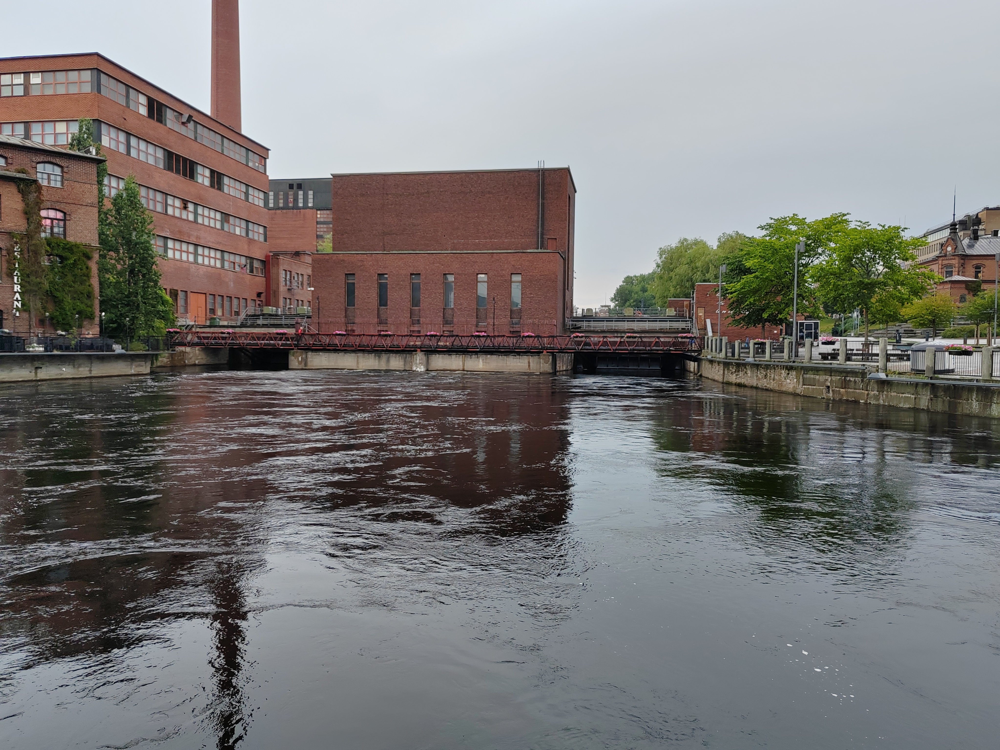

Rantamaisema
Aurinkoinen päivä on hyvä aika ulkoilla.

On this page, you will practice integrating images into a web page's overall design.
Aurinkoinen päivä on hyvä aika ulkoilla.
Tehdasrakennus joen varrella.

Helluntaiseurakunnan rakennus taustalla.